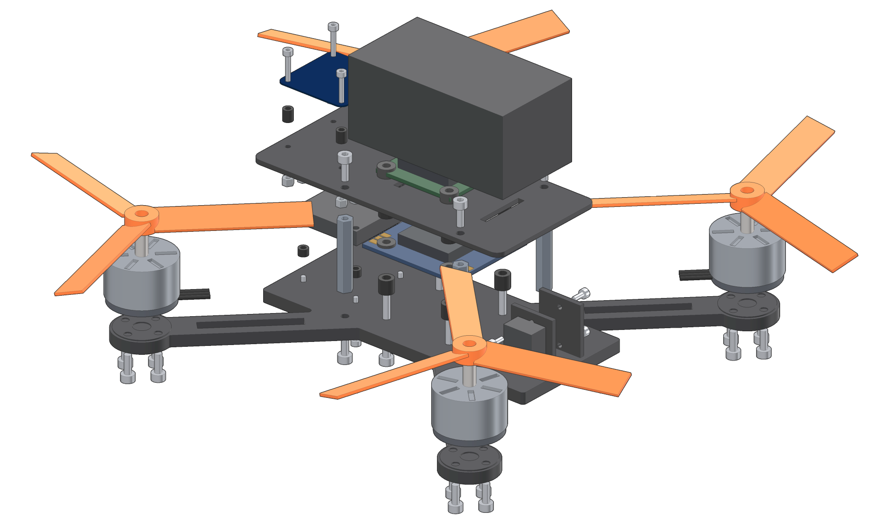

PR0TOBOARD · UHD
Rev A2026-09-26UHD-QUAD5-AG
Assembly guide
5-inch 6S Quadcopter
Reference 5-inch 6S freestyle quadcopter: DolphinRC F405 V3 + AM32 60A stack, four MEPS NEON 2207 V2 1950KV motors with HQProp Ethix S5 props, CNHL 1100 mAh 6S pack, RadioMaster RP1 V2 ELRS receiver, DJI O4 Air Unit, Matek M9N-5883 GNSS/compass, custom frame.

Exploded along each joint's axis in fastener-stack order (14 mates, 72 hardware parts, battery by placement hint).
Steps
11
mechanical and wiring
Mates
14
from assemble()
Hardware
72
screws, spacers, standoffs, nuts
Parts
93
27 BOM lines
How this guide is made
Steps, parts and hardware come from the UHD model: mates and fastener stacks from assemble(), wiring from wiringChecklist. The coverage table at the end lists where every mate, fastener and wire appears.
D Derived: computed from model values; formula in the provenance appendixUnmarked values are cited from the part's sources (sources.json) or are design values of the model.
PR0TOBOARD · UHDGenerated from the UHD model
library/systems/quadcopter-5in by scripts/docsUHD-QUAD5-AG · Rev A · 2026-09-26